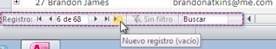

Tutorial de Base de Datos Avanzada :)
:) HOLAAAAA Bienvenido !!!aqui conoceras como se crea como se hace paso a paso lo que necesitas de BASE DE DATOS AVANZADA :)


 1
1 2
2 5
5 6
6 7
7 8
8


 3
3 4
4 6
6 7
7 8
8 9
9 12
12 13
13
Base de Datos Avanzada


app3R
Clara Vanessa Camacho Tlatelpa
¿Qué es Acces?
Access es una palabra inglesa que puede traducirse como “acceso”. El uso más habitual del término en nuestra lengua está vinculado a un programa informático desarrollado por la empresa estadounidense Microsoft. Access, o Microsoft Access, es un software que permite gestionar una base de datos.

Almacenar datos:
una base de datos almacena datos relacionados con un asunto o propósito particular (por ejemplo, una lista de recetas o los clientes de una empresa); también facilita las tareas de agregar, actualizar, organizar y eliminar datos.
Buscar datos:
puede ubicarse un dato fácil y rápidamente. Por ejemplo, buscar los clientes de apellido "Gómez" que residan en la localidad cuyo código postal es 1200.
Analizar e imprimir información:
se pueden realizar cálculos con los datos almacenados en la base de datos; por ejemplo, calcular qué porcentaje de las ventas totales fue realizado en la provincia de Chubut.
Manejar datos:
una base de datos permite manejar con relativa facilidad grandes volúmenes de datos, por ejemplo cambiar el encargado de ventas de todos los clientes de una zona.
Compartir datos:
la mayoría de los programas de bases de datos permiten que más de un usuario acceda simultáneamente a los mismos datos; los denominaremos bases de datos multi-usuario
app3R
Clara Vanessa Camacho Tlatelpa
Diseñadora
Datos
Clara Vanessa Camacho Tlatelpa
Programación

Recursamiento
CBTIS 16
Junio-Julio
2017
"4E"
Desarrolla Aplicaciones Moviles
"DAM"
Mi Gmail
Clara.camachotlatelpa25@gmail.com
ESTA APLICACION ES UN TUTORIAL DE COMO HACER PASO A PASO BASE DE DATOS AVANZADAS :)
Profesor
Lic. Jose Antonio Gómez Hernandez

app3R
Clara Vanessa Camacho Tlatelpa
Para que sirve Access
Sirve para ??
Microsoft Access es un programa diseñado para la creación y administración de bases de datos, para uso dentro del sistema operativo Windows, y está orientado para que las personas, puedan gestionar sus bases de datos de manera fácil y práctica, aun y cuando estas, no cuenten con conocimientos especializados en el manejo de bases de datos, lográndolo mediante el uso de ficheros con una interfaz gráfica fácil de manejar
URL del artículo: http://paraquesirven.com/para-que-sirve-access/ Nota completa: Para qué sirve Access
app3R
Clara Vanessa Camacho Tlatelpa
Ventajas y desventajas
Ventajas
Microsoft Access 2010 se basa en la simplicidad, con plantillas listas para que empiece a trabajar y herramientas eficaces para mantenerse al día a medida que los datos crecen. Access 2010 le otorga capacidades para aprovechar la información, incluso si no es experto en bases de datos. Además, a través de bases de datos web recién agregadas, Access amplía la eficacia de los datos, facilitando el seguimiento, la creación de informes y el uso compartido con otras personas. Los datos nunca estarán más allá del explorador web más cercano.

Desventajas
Uno de los grandes inconvenientes que tiene la base de datos de Access es que no es multiplataforma, pues sólo está disponible para sistemas operativos de Microsoft, Su uso es inadecuado para grandes proyectos de software que requieren tiempos de respuesta críticos
app3R
Clara Vanessa Camacho Tlatelpa
Cómo hacer un nuevo Documento
paso a paso :)
Crear una base de datos en Access con plantillas
Una manera de crear una base de datos en Access es utilizar las plantillas predeterminadas que ofrece la herramienta. Para ello debes ir a la ficha Archivo y seleccionar la opción Nuevo y posteriormente hacer clic sobre Plantillas de ejemplo y enseguida se mostrarán las plantillas disponibles.
Al elegir crear una base de datos a través de una plantilla se incluirán las tablas, formularios y reportes que contiene dicha plantilla y deberemos comenzar a trabajar a partir de dichos elementos.
Sugiero utilizar este método solamente cuando has revisado previamente dichas plantillas de bases de datos y estás totalmente seguro de que se ajustan a tus necesidades. Las bases de datos creadas de esta manera tienen una estructura de datos bien definida y puede llegar a ser muy laborioso tratar adaptarla para importar datos de otra fuente que tienen una estructura muy diferente.
Crear una base de datos en Access en blanco
Ya que (en teoría) al momento de crear una base de datos en Access deberíamos haber hecho el diseño, la mejor opción para crear nuestra base de datos será hacerlo a partir de una base de datos en blanco. Para hacerlo debemos comenzar por pulsar la opción Base de datos en blanco que se encuentra dentro de la opción Nuevo de la ficha Archivo.

Es importante hacer notar que al momento de pulsar el botón Base de datos en blanco se crear un archivo con el nombre y ruta especificados en el panel derecho.

Una vez creada la base de datos podrás encontrar el archivo .accdb en la ruta especificada. Por último debo mencionar que Access insertará una tabla vacía llamada Tabla1 a partir de la cual podremos iniciar con la creación de nuestro diseño.
app3R
Clara Vanessa Camacho Tlatelpa
Crear una tabla
Crear una tabla en Access
Una base da datos en Access almacena la información en tablas. Una tabla es un conjunto de columnas y filas donde se guardarán los datos de una manera organizada. Una tabla en Access es similar (hasta cierto punto) a una hoja de Excel.
Antes de empezar a crear una tabla en Access debemos diseñar la base de datos para poder conocer los requisitos de nuestra tabla. Una vez que sabemos estos requisitos podemos proceder fácilmente a su creación dentro de la herramienta.
Cómo crear una tabla en Access
Podemos crear tablas para una base de datos nueva o para una base de datos existente. En ambos casos el procedimiento será el mismo. En primer lugar debemos ir a la Ficha Crear y pulsar el botón Tabla.

Observarás en pantalla del lado izquierdo el panel de navegación enlistando la nueva tabla y del lado derecho una pestaña con el mismo nombre de la tabla y una cuadrícula donde podremos crear los campos de la tabla.

Definir el campo primario de la tabla
Supongamos que deseo crear una tabla donde almacenaré la información de los empleados de una empresa con la siguiente información:
El campo primario de esta tabla será el campo IDEmpleado el cual contendrá un texto de 5 caracteres que identificará de manera única a cada empleado.
Antes de crear este campo debemos observar que Access ya ha creado el primer campo de la tabla y le ha puesto el nombre Id. Así que el primer paso será modificar el nombre de ese campo para que concuerde con la definición de la tabla. Para iniciar con este cambio debemos hacer clic derecho sobre el encabezado del campo para mostrar el menú emergente.
Selecciona la opción Cambiar nombre de campo y podrás cambiar el nombre del campo directamente en el encabezado.
Solo nos resta cambiar el tipo de dato de este campo que de acuerdo a mi diseño debe ser de tipo Texto y una longitud de 5. Para hacer el cambio debes ir a la Ficha Campos, que se encuentra dentro de Herramientas de tabla, y dentro del grupo Formato encontrarás una lista con los tipos de datos disponibles y de donde seleccionaré la opción Texto.
Finalmente debo especificar la longitud del campo dentro cuadro de texto llamado como Tamaño del campo que también se encuentra dentro de la Ficha Campos.

Los pasos que hemos seguido hasta ahora fueron para modificar un campo que Access ya había colocado y lo hemos modificado. A continuación debemos crear nuevos campos el cual será un procedimiento diferente.
Definir los campos restantes de la tabla
En primer lugar debemos hacer clic en el encabezado que tiene la leyenda “Haga clic para agregar” y se mostrará la lista de tipos de dato disponibles.
Una vez seleccionado el tipo de dato para nuestro campo Access nos permitirá capturar el nombre del campo en el encabezado.
Para los campos de texto podrás modificar la longitud de la misma manera que lo hicimos con el campo primario, es decir, al seleccionar el campo podrás observar el cuadro de texto Tamaño del campo dentro del grupo Propiedades de la Ficha Campos.
De esta manera hemos terminado de crear la estructura nuestra primera tabla en Access pero ¡aún hace falta el paso final! Nunca olvides presionar el botón Guardar (en la barra de acceso rápido) de manera que se guarden los cambios. Access mostrará un cuadro de diálogo para salvar la nueva tabla.
Es en ese momento que tenemos la oportunidad para dar un nombre descriptivo a la tabla de manera que siempre sepamos el tipo de información que guarda. Al pulsar el botón Aceptar verás reflejado el nuevo nombre de la tabla.
app3R
Clara Vanessa Camacho Tlatelpa
cómo llenar Tabla paso a paso
Opción 1
En el grupo Registros de la pestaña Inicio, haz clic en la opción Nuevo
Opción 2
En la barra de navegación de registros, ubicada en la parte inferior de la ventana, haz clic en el botón Nuevo registro.

Opción 3
Simplemente comienza a escribir en la fila bajo el último registro agregado.
app3R
Clara Vanessa Camacho Tlatelpa
¿cómo ponerle atributos a los campos ?
app3R
Clara Vanessa Camacho Tlatelpa
¿cómo crear formularios ?
Crear un formulario en Access
Un formulario en Access es muy similar a un formulario en papel el cual tiene el formato adecuado para desplegar las etiquetas y la información. En Access podemos crear formularios que contengan todos los campos de una tabla.
Razones para crear un formulario en Access
Cuanto tienes una tabla formada por muchos campos (columnas), no es posible visualizar toda la información en el monitor, es necesario mover la barra espaciadora para conocer la información de algún registro específico.
Una razón para crear un formulario en Access es porque deseamos ver todos los campos de un registro en una sola pantalla.
Pasos para crear un formulario en Access
El primer paso para crear un formulario es seleccionar la tabla en la cual se basará el formulario y posteriormente ir a la ficha Crear donde pulsaremos el botón Formulario e inmediatamente observaremos el formulario en pantalla
En la parte inferior del formulario podrás observar un grupo de controles que nos permitirán desplazarnos entre todos los registros de la tabla.
Guardar el formulario
Finalmente debemos pulsar el botón Guardar para asignar un nombre a nuestro nuevo formulario y guardarlo como parte de nuestra base de datos Access.
Podrás acceder al formulario desde el panel izquierdo que despliega los objetos de Access.
app3R
Clara Vanessa Camacho Tlatelpa
¿cómo relacionar tablas ?
Para crear relaciones con Access 2010 debemos ir a la pestaña “Herramientas de base de datos” en la cual pulsaremos el botón “Relaciones”.
Aparecerá el cuadro de diálogo Mostrar tabla de la derecha en donde deberemos seleccionar las tablas que vamos a relacionar pulsando agregar, o haciendo doble click sobre las tablas deseadas.
Para crear la relación se debe seleccionar el campo que se usará para la relación y sin dejar de presionar el mouse arrastrar al campo análogo de la otra tabla con el cual se relaciona, por lo general se usa una calve primaria y otro campo que actuará como clave foránea, en otras palabras “jalas” de un campo a otro para crear la relación entre ellos; pero ten en cuenta que los campos deben tener el mismo tipo de datos, para que coincida el valor, por ejemplo no podrás relacionar un campo de fecha con un numérico.
En la imagen se relacionaron los códigos de producto, como apreciaras en la imagen se tiene un botón llamado “Modificar relaciones” que al pulsarlo te mostrará la siguiente ventana donde podrás exigir la integridad referencial, en este caso esto es posible ya que el la tabla de Productos tiene el código de producto como clave primaria, en caso no se tenga una no se podrá establecer la integridad referencial.
Al cerrar y guardar la relación se podrá ver la vinculación entre las tablas en este caso de uno a varios, luego al abrir la tabla producto mostrará sus ventas.
Aclaración:
¿Necesariamente se tiene que tener clave primaria para relacionar tablas?
Se puede relacionar pero no se puede exigir integridad referencial y el tipo de relación es indeterminado.
app3R
Clara Vanessa Camacho Tlatelpa
¿cómo hacer consultas ?
Crear una consulta en Access
Una consulta en Access no es más que una pregunta que podemos hacer a la base de datos sobre la información que contiene. Para crear una consulta en Access podemos utilizar el Asistente para consultas el cual nos guiará paso a paso por todo el proceso.
El primer paso para crear una consulta en Access es saber la pregunta que deseamos hacer a la base de datos, así que antes de iniciar con el Asistente para consultas debemos tener una idea del tipo de información que deseamos obtener. Por ejemplo: Me gustaría tener una lista de todos los departamentos de la empresa.
Cómo crear una consulta en Access
Para iniciar con la creación de una consulta en Access debemos ir a la ficha Crear y pulsar el botón Asistente para consultas que se encuentra dentro del grupo Consultas.
Se mostrará el primer paso del proceso el cual nos permite elegir el tipo de consulta que deseamos crear. En este ejemplo crearé una consulta sencilla.
En el segundo paso del proceso podremos elegir la tabla que contiene la información que necesitamos. Además podremos elegir todas o algunas de las columnas de la tabla seleccionada, solamente será necesario pasarlas del recuadro de la izquierda al recuadro de la derecha.
El último paso del Asistente para consultas nos permite asignar un título a la consulta.
Por ahora dejaré seleccionada la opción Abrir la consulta para ver información y pulsaré el botón Finalizar. Esto cerrará el Asistente para consultas y mostrará el resultado de la consulta
En el panel izquierdo podrás observar la lista de consultas que hayas creado. Si no ves la lista de Consultas es probable que estés observando algún otro tipo de objeto de Access, solamente haz clic sobre el título del panel izquierdo y selecciona la opción Consultas.